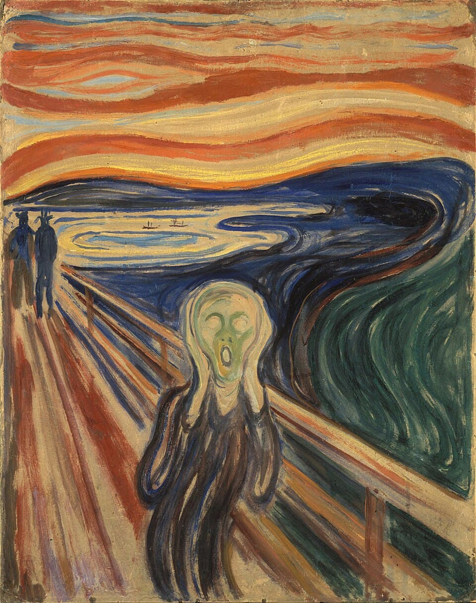

OPPLEV KUNSTEN, FORSTÅ MENNESKET
EDVARD MUNCH
NORSK KUNSTNER · 1863–1944
01 / MENNESKET BAK KUNSTEN
Et liv omgitt av kunst.

SKRIK · 1910
Før musepekeren over bildet
KUNSTNEREN OG MENNESKET
Et liv preget av sterke følelser
Edvard Munch (1863–1944) var en norsk maler og grafiker, og en av de mest betydningsfulle kunstnerne i norsk kunsthistorie.
Gjennom maleriene sine utforsket han temaer som kjærlighet, angst, ensomhet og død. Kunsten hans skulle ikke bare vise det mennesker ser, men også det de føler.
UTFORSK HANS LIV